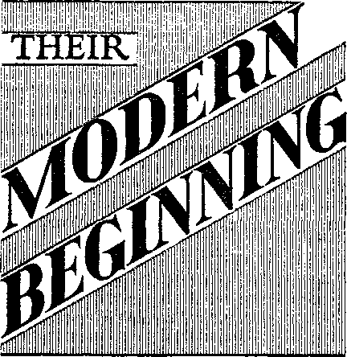
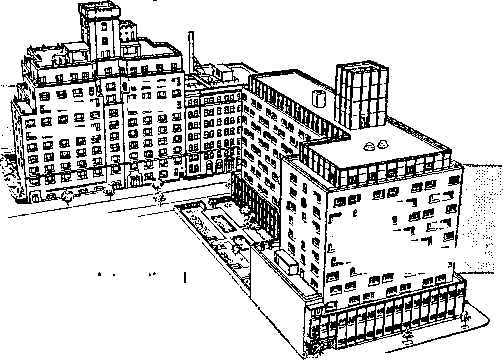
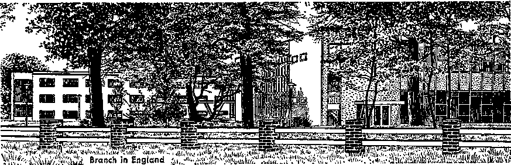
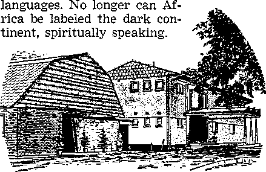

• Who are they?
• When did they begin?
• Why do they preach as they do?
What do they believe?
What is their organization like?
• What is their relation to the world?
• What is their future?
CONTENTS
Subject Page
Witnesses and Ministers of God
[Why are they called “Jehovah’s witnesses”? Is every Witness a minister?
Who ordains Jehovah’s witnesses? Why do they preach from house to house?]
[An ancient foundation. The Watch Tower Society. Other early work. Preaching methods. Persecution. In Catholic and Communist lands. Opposition fails.]
Preaching in AU the Inhabited Earth
[Schools expand Kingdom preaching. Europe. Asia. Africa. Islands of the sea. South America. North and Central America.]
[Sermons at the doors. Use of literature. Private Bible meetings.]
What Jehovah’s Witnesses Believe
[Watch Tower Bible and Tract Society. Presiding ministers. Duties of ministerial servants. Assistant congregation servant. Bible study servant.
Literature servant. Magazine-territory servant. Accounts servant. Other appointments.]
[Congregation book study. Theocratic Ministry School. Service Meeting.
Public meeting. “Watchtower” study. A dean organization. What about worship at home?]
Printing and Distributing the Word of God
[Early printing of the Society. First factory. Concord Street factory. 117
Adams Street factory. Visit to the factories. A Bible printing society. Visit to Bethel. Watchtower Society farms.]
What Relation to the World? An early Christian position
[Neutrality and relative subjection. Conduct like early Christians.
Allegiance only to God. No part of the world. Preachers of the kingdom of God.]
PUBLISHERS WATCHTOWER BIBLE AND TRACT SOCIETY OF NEW YORK, INC.
Brooklyn, New York, U.S.A.
Made in the United States of America, 1966
^T1HE establish-I ment of God’s kingdom is news of the greatest importance to all peoples and national groups. (Dan. 7:14) That news may not be your immediate interest in considering the information
cund.
MINISTERS ^GOD
praise to God’s name by various acts of faith. (Heb. 11:4-12:2) Jesus himself is referred to as “the faithful and true witness” and he said to his true followers: “You will be witnesses of me . . .
that follows, but it is true, nevertheless, and is here stated at the outset because it is that news that is a primary reason for this organization to exist at all.
Not only survival, but eternal life depends upon coming into peaceful relationship with God’s King and kingdom before the great war of Armageddon breaks. (Ps. 2:1-12; Rev. 16:14, 16) To make this important information known around the world Jehovah God has raised up a society of Kingdom witnesses who are active in over 195 lands.1 You know them as “Jehovah’s witnesses.”
Why Are They Called “Jehovah’s Witnesses”?
Jehovah’s witnesses follow Christ Jesus, not any man or man-made organization, and for that reason they call their organization by the name of no man. Like Jesus, their chief work is to “bear witness to the truth.” (John 18:37) God’s Word is truth, so their witnessing is in behalf of God, whose name alone is Jehovah. (John 17: 17; Ps. 83:18) Those faithfully speaking on his behalf Jehovah calls his witnesses: “ ‘You are my witnesses,’ is the utterance of Jehovah, ‘even my servant whom I have chosen.’” (Isa. 43:10) Early witnesses of Jehovah from the time of Abel brought to the most distant part of the earth.” (Rev. 3:14; Acts 1:8) Therefore, Jehovah’s modern witnesses faithfully take the good news of God’s established kingdom to “all the inhabited earth for a witness to all the nations.” (Matt. 24:14) Appropriately, their God and his important work are identified by the Scriptural name “Jehovah’s witnesses.”
Is Every Witness a Minister ?
Yes, in the true Scriptural sense of the word. A minister of God is a public servant (Greek, didkonoSj “through the dust”) of Jehovah God, one who follows in Jesus’ footsteps, getting out in public, even traveling dusty roads, to preach the good news of God’s kingdom. There is an urgency about it, as the apostle Paul emphasized when he said: “I solemnly charge you before God and Christ Jesus, . . . preach the word, be at it urgently.” (2 Tim. 4:1, 2) Every true Christian gladly renders such ministerial service as a regular part of his worship leading to salvation. As Romans 10:10 states: “With the heart one exercises faith for righteousness, but with the mouth one makes public declaration for salvation.”
Authority to minister comes to dedicated men, women and youths from the highest Source, God himself. “Praise Jehovah from the earth,... you young men and also you
virgins, you old men together with boys. Let them praise the name of Jehovah.” (Ps. 148:7,12,13) Everyone, man, woman or youth, who wants God’s approval responds to that command. (Jas. 2:24, 26; Rev. 22:17) For this reason, Jehovah’s witnesses are a society of ministers. If you embrace the teachings of the Bible and live your faith, you will be God’s minister too.
Who Ordains Jehovah’s Witnesses ?
The only valid ordination to the Christian ministry comes from God. (2 Cor. 3: 5, 6; Isa. 61:1, 2) Those who are ordained by an organization of men are ministers of such organization, but those ordained by God are his ministers. In the Bible God outlines the requirements for those who become his ministers. They must study his Word to learn his will and then bring their lives into harmony with it. If one does this, God requires that one make a personal dedication to do His will. (Rom. 12:1) This dedication, this vow to do God’s will, is made in private prayer to Jehovah God through
Christ. Then, in symbol of such dedication, one must be baptized in water as Jesus was. (Matt. 3:13-17) He now becomes God’s ordained minister.
He did not ordain himself by vowing to serve God, nor did the one baptizing him ordain him. God’s commission to all those dedicating themselves to do His will is what constitutes the ordination of such persons as his ministers, and He backs them up with his holy spirit. Not only men, but women and qualified youths may receive this Scriptural ordination. (Ps. 68: 11; Acts 2:17, 18; Rom. 16:1; Eccl. 12:1) While God’s commandment to preach the Kingdom good news is there in the Bible for all to read, it constitutes the ordination only of those who meet his requirements. It may be compared to the issuing of a diploma to a school graduate. While the wording of the diplomas is basically the same, and anyone can read them, what they say does not apply to everyone. One’s name belongs on such a diploma only when he meets the requirements. Likewise, it is after study, dedication and baptism that the commission of God recorded in the Bible constitutes one’s ordination.
Of course, seminary training and written certificates of ordination are not requirements for Scriptural ordination. (John 7: 15; Acts 4:13; Gal. 1:11,12,15-17) Rather, ministers ordained by Jehovah and backed up by his holy spirit produce living letters of recommendation. (2 Cor. 3:1-3) Every sincere student of God’s Word will appreciate that the real purpose of studying the Bible is to qualify for this ordination that means life for others as well as for himself. (2 Tim. 3:16,17; 1 Tim. 4:16; Matt. 28:19, 20) Toward that end he will study diligently.
Why Do They Preach from House to House?
Jehovah’s witnesses take the good news to the homes of the people because this is the example set by Jesus and his apostles. Luke 8:1 says of Jesus: “He went journeying from city to city and from village to village, preaching and declaring the good news
of the kingdom of God. And the twelve were with him.” Regarding the apostles, Acts 5:42 states: “And every day in the temple and from house to house they continued without letup teaching and declaring the good news about the Christ, Jesus.” At Ephesus Paul taught Christians how to preach “publicly and from house to house.” (Acts 20:20) Of course, modern means of communication, such as radio and the printed page, are used extensively, but basically the work of Jehovah’s witnesses is done by going from house to house in the early Christian manner. This is the best way to ensure that no one hungering and thirsting for righteousness is overlooked. (Matt. 5:6) Love motivates Christians to go from house to house.
JUST two days before his death Jesus uttered a prophecy that was to find fulfillment during his second presence, just prior to the end of this system of things. Among other things, he said: “This good news of the kingdom will be preached in all the inhabited earth for a witness to all the nations.”—Matt. 24:14.
Focus your attention on these words of Jesus for a moment. Consider what would be necessary to fulfill them. Think of the time, energy, money, manpower and organization involved, not to mention the willingness, determination and courage of the preachers! What a tremendous undertaking, to preach God’s kingdom to the billions of earth’s inhabitants!
But since Jesus said that such Kingdom preaching would be done, and since the unparalleled events of this generation mark this as time for it to be accomplished, the question arises, What is being done about it? The answer to that question is found in the modern history of Jehovah’s witnesses.
An Ancient Foundation
It was Jehovah who said, “You are my witnesses, ... and I am God.” (Isa. 43:12) It was Jehovah’s Son, Christ Jesus, who said, “You will be witnesses of me ... to the most distant part of the earth.” It was Paul who wrote under divine inspiration that Abel, Enoch, Noah, Abraham, Isaac, Jacob, Moses, David, Samuel and the other prophets were “so great a cloud of witnesses.”—Acts 1:8; Heb. 11; 12:1.
Thus, those who serve Jehovah God must bear testimony to his name, must acknowledge and witness to the power of his Son, Christ Jesus, and must follow the example of the faithful men of old who firmly maintained their integrity to Jehovah and to his righteous principles.
If Jehovah’s witnesses looked to some man as leader, then it could not be said that they began with Abel and progressed down through the faithful men of old. They would, instead, have begun with the man they followed. But since they are not a denomination but are merely an association of men and women who put God’s service first and line up with Bible principles, they are a part of the group that began with the first true witness of God, Adam’s son Abel, all of whom have looked to the righteous conditions of God’s new order to come.
The Watch Tower Society
The Watch Tower Bible and Tract Society of Pennsylvania was organized in Pittsburgh, Pennsylvania, in 1881 and chartered in 1884 to aid such men in their service to God. Its first president was Charles Taze Russell. Brought up by Godfearing Presbyterian parents, he was not satisfied with the sectarian explanations of Scripture given him, and back in 1872 he started a Bible-study class with several of his friends.
They discovered many of the Biblical truths that had been hidden by Christendom’s traditions. In 1874 they published The Object and Manner of the Lord’s Return, to debunk the religious theory of the earth’s being destroyed by fire at Christ’s second coming, and to point out that the second coming would be invisible, as the apostles had long before known. As
6
they continued to point to firm Scriptural truth, others who wanted to be true witnesses for God joined with them.
In July, 1879, to help in this work, the first issue of The Watchtower was published. In that year chronological proof was published that the end of the uninterrupted rule of the world by Gentile nations would come thirty-five years later, 1914 C.E. This warning and, at the same time, the preaching of the good news that then God’s kingdom under Christ would be due to begin, increased in tempo throughout the intervening thirty-five years, and when World War I actually marked the fulfillment of that amazing prediction it proved that we were at the end of this present system of things and that the new, so long looked for, was now at hand!
Circulation of The Watchtower among those who really want to serve God properly has grown from a first issue of 6,000 to millions of copies each issue today, in over 70 languages!2
Other Early Work
In 1881 the 162-page Food for Thinking Christians was published to awaken many more. In 1886 the 350-page Divine Plan of the Ages was published, to enjoy a distribution of six million copies during a period of forty years.
The work in foreign fields was given impetus in 1891 when the Society’s president made his first trip to Europe and'men of faith in God associated in congregations in Britain, and again in 1912 with a round-the-world tour and lectures in many countries.
In 1909 the Society’s headquarters moved from Pittsburgh to its present headquarters in Brooklyn at 124 Columbia Heights. In 1910 further great strides in Kingdom publicity were made when more than a thousand newspapers in the United States and Canada regularly carried sermons written by the Society’s president. By 1913 there were 1,500 newspapers
Jehovah’s Witnesses regularly carrying these in four different languages.
As the army of Christian witnesses expanded, many names were attached to them (such as “Russellites,” etc.), most of which were intended to misrepresent and discredit. But they rejected such names and merely answered that they were Christians, until in 1931 they received the new and Scriptural name, Jehovah’s witnesses, by which they are now known throughout the earth.
The Society’s first president, who spent his strength in Jehovah’s service for more than forty years, died October 31, 1916, a faithful witness of Jehovah God, and Joseph F. Rutherford was unanimously appointed as the new president. He served faithfully for twenty-five years until his death in 1942, at which time the Society’s present president, Nathan H. Knorr, replaced him. Through all this time the principle of the organization has remained; not a sect, but an organization to serve all men who truly wish to be proper witnesses to God.
Preaching Methods
Early in the Watch Tower Society’s history pilgrims, traveling evangelists, visited private homes and held “cottage meetings” or home Bible studies, much as did the early apostles and disciples of Jesus. In 1888 fifty persons undertook full-time house-to-house preaching, volunteering their entire efforts to gospel preaching. That group of volunteers, now called “pioneers,” has grown to more than 47,000!2
All available methods to present Christian education have been used. In 1914 the “Photo-Drama of Creation,” a combination of motion pictures and stills, accompanied by recorded lectures (at a time when sound recording was in its infancy) was shown in major theaters throughout the United States, Britain, Germany, Switzerland, Finland, Sweden, Denmark, Australia and New Zealand, and for five years brought Scriptural comfort and hope to many millions.
In 1919 The Golden Age began to be published. In 1937 it became Consolation, in 1946 Awake! It has remained an excellent companion to The Watchtower, pointing to the conditions of our day in fulfillment of the prophecies The Watchtower discusses. Awake! now has a circulation of several million copies each issue in over twenty-five languages.3
The radio has been used extensively in this work. February 24, 1924, WBBR began operation in New York city. Other stations were built by the Society, but later sold. In 1957, because of the extensive expansion of the house-to-house ministry, WBBR was sold also, its purpose having been served. In the summer of 1927 the Society used its first radio chain, even in that early day hooking together fifty-three stations world wide. In 1928 the largest radio chain for a single broadcast to that time was used for a Bible lecture from the convention in Detroit, tying together 100 stations. In 1933 a total of 23,783 radio lectures were transmitted by the Society over 403 stations.
In 1937 a new method, the use of phonograph recordings taken right to the people, replaced the general use of broadcasting. In 1943 a special course in public speaking was instituted in each congregation. It was called the “Theocratic Ministry School” and it has equipped Jehovah’s witnesses to deliver short Bible sermons at the door. (See page 21.) Soon, the use of recordings was replaced by individual discussions with each person in his home. This has proved far more effective than radio or phonograph, since it allowed for questions to be answered.
One of the chief methods of this preaching has been through the printed page, and between 1874 and 1965 a total of over 846 million Bibles, books and booklets were distributed by Jehovah’s witnesses, in over 150 languages and dialects! (See also pages 23-25.) This does not include the thousands of millions of copies of The Watchtower and Awake! distributed during the same period.
Persecution
This work has not been without opposition, however. Matthew 24:9 has certainly been proved true regarding our day: “Then people will deliver you up to tribulation and will kill you, and you will be objects of hatred by all the nations on account of my name.” The monstrous, globe-girdling proportions of the actual fulfillment of this text are almost unbelievable.
As the Kingdom proclamation increased, exposing false doctrines through hardhitting Bible truths, the clergy were angered. They vigorously opposed the teaching of Bible facts that contradicted their theories, and this religious opposition kept pace with the increase of the work. The continued opposition on the part of clergymen to this Bible preaching culminated in an unjust sentencing of the Society’s officers to eighty years’ imprisonment at Atlanta penitentiary in 1918, but this was found to be in error. They were dismissed, restored to citizenship, and thus were never at any time convicts within the meaning of the law.
A vicious wave of persecution spread through the country at the same time, but the work was restored, with the slogan “Advertise, advertise, advertise the King and the Kingdom,” and, like the “dry bones” in Ezekiel’s vision (chapter 37), came to vigorous life, surging forward many times greater than ever before.
Another notorious example of this persecution was under Hitler in Germany, where ten thousand Christian ministers spent many years in Nazi torture camps. Canada, England and other parts of the British Empire followed the Nazi dictator’s lead in oppressing these Christians, as some wished to do even in the United States.
From 1940 to 1944 more than 2,500 violent mobs assaulted Christian people, and, shamefully enough, some of these were actually led by clergymen, who are supposed to serve the very God of those they were attacking!
In Catholic and Communist Lands
Bans and severe persecution have been brought at various times upon Jehovah’s witnesses in Albania, Bulgaria, Communist China, Czechoslovakia, Eastern Germany, Hungary, Poland, Romania, Russia, and in the noncommunist countries of the Jordan, United Arab Republic and Portuguese East Africa. Recent news from ten countries behind the Iron Curtain showed that there were at least 100,000 of Jehovah’s witnesses there, many of whom have been imprisoned in Siberian camps because of their Christian beliefs.
A bitter battle was fought out in Quebec to establish freedom of religion. Beginning before World War II, by 1946 arrests of Christian ministers for gospel preaching in that Canadian province were running as high as thirty a day. Not until 1953, after a twenty-year fight and a successful six-year legal battle in the test case of Saumur vs. City of Quebec, was a beginning of freedom of worship established.
All too frequently it is the clergy who prompt such opposition. They do not fight with equal vigor against modernism and evolution, which attempt to contradict God’s true Word, but, instead, they have fought against the very ones who are preaching that Word and firmly upholding it. This is nothing new, however, for it was the religious leaders in Jesus’ day who opposed the first foundations of Christianity, and it is their modern parallel in Christendom today who still do the same. —Matt. 23:13, 33-35; Mark 11:18; John 11:45-53.
Opposition Fails
Yet the work grows and expands. The persecutions cannot succeed, for the fight is not against man, but against God. Legal victories have many times shown the rights of these Christian ministers. Of the 59 cases involving Jehovah’s witnesses that have been docketed in the Supreme Court of the United States, forty-three of them have been decided in their favor. High courts in other lands have done similarly. But when the authorities do not come to their protection, this gospel preaching continues just the same.
So it is that, behind the Iron Curtain and in other lands where the preaching work of Jehovah’s witnesses is legally proscribed, the ministry is not halted. It continues underground, much as it did with the early Christians, when persecution literally drove them underground into the catacombs. Jehovah’s witnesses of modern times refuse to give up their Godgiven commission, just as Jesus’ early disciples did, saying: “We must obey God as ruler rather than men.”—Acts 5:29.
Printing Plants, Brooklyn, N.Y.
PBEACIffinW in All the
Inhabited
HE work of Jehovah’s witnesses in every country is essentially missionary preaching activity. The methods are quite the same throughout all — the earth, except for countries that are dominated by Communism or Roman Catholic dictators where certain public forms of worship are not tolerated.
While a majority of the foreign missionary societies give most of their effort to appealing to people through establishing medical centers or colleges, Jehovah’s witnesses devote themselves to giving free Bible education in the homes of the people and in public halls. They have found that many people will become “believers” in a certain religion for the material benefits they gain; however, if those things are taken away the people turn to some other idea. The objective of Jehovah’s witnesses is to have only persons of genuine faith in God and Christ associate with their organization. If such persons are taught the pure Bible truth and encouraged to claim Christianity because of true belief and not for personal gain, they will endure even under great persecution or trouble and will hold to their faith. This is pleasing to God.
Jehovah’s witnesses are not out to build up a great membership regardless of what kind of lives the people lead and they do not offer a lot of inducements in material things in order to get people’s names on a roll book. They must be sincere believers in God and Christ if they are to gain everlasting life. It is encouraging to observe that many of such people are still to be found in these evil days.
Schools Expand Kingdom Preaching
During the second world war the president of the Watch Tower Society conceived
Earth
fl s s
m a a »
1 s
Sts
<8
International Headquarters and Gilead School, Brooklyn, N.Y.
gfl 00
® IS® J;®®
the idea of a school to train missionaries to carry the Kingdom message to distant places. This idea met with the enthusiastic approval of the board of directors, and in February, 1943, the first class of the Watchtower Bible School of Gilead opened at Kingdom Farm in upstate New York. Up until this school was moved down to the Brooklyn headquarters in 1961, 3,638 students from 95 countries had completed its five-month course and had been sent to more than 100 different countries. They opened up the preaching work in many of these places, and in the course of years were joined with literally thousands of fellow ministers who responded to the message.
The Gilead School in Brooklyn is continuing to train more mature ministers to care for this large organization of preachers that has been built up in other lands. In this way the worldwide organization of Jehovah’s witnesses is directed in harmony with the Scriptures and the pattern followed at headquarters. These men are also being given practical instruction and experience in all features of printing so that the factories in other countries will operate efficiently.
Another school of specialized training operated by the Society is the Kingdom Ministry School that offers a two-week course of Bible study to congregation overseers and special representatives of Jehovah’s witnesses. Beginning in March of 1959 in the United States, such schools are also in operation in many other countries throughout the world.
In over 199 lands* Jehovah’s witnesses preach one united message concerning God’s kingdom. The growth of this preaching work and how it is carried on is published in detail each year in the Yearbook of Jehovah's Witnesses. We believe the short report published below will prove interesting to you, for although the message is the same, customs of the people and the way they react to the message are often very different.
Europe
War-ravaged Europe has been a fertile field for the preaching of the good news of the Kingdom, whereas in Asia progress has been slower due to the enslavement of the peoples to deep-seated pagan traditions that make acceptance of Bible truth difficult. Although the war year of 1942 saw only 22,796 of Jehovah’s witnesses in thirteen lands in Europe and 406 ministers in six Asiatic countries, ten years later the combined number had increased nearly sevenfold, to 161,141 in forty-three countries. By 1965 the number of Kingdom preachers in Europe and Asia had grown to over 374,000 in 50 countries, and they are active on both sides of the Iron Curtain.*
In ten countries behind the Iron Curtain over 100,000 of Jehovah’s witnesses are busy preaching the message of God’s kingdom, and for many this has resulted in imprisonment and death. Four students who recently attended the school of Gilead spent a total of twenty-five years in Communist prisons; nevertheless, they continued to study and preach. One of them told how they did this: “During our fifteen-minute march in the prison yard each day we would whisper to the prisoner up ahead when the guard was not looking. We knew that if we were detected it would mean three weeks of isolation. But the preaching had to be done and so we used this method to do it. Really our brothers were a problem to the prison guards. They knew that if they put us together we would study all day, and if they took us apart we would preach to everyone possible.”
In western Europe the preaching work is done free from the restriction encountered behind the Iron Curtain, and it is increasing marvelously. As the people and authorities become better acquainted with what Jehovah’s witnesses are doing they listen to their message, and are glad'to have them hold assemblies in their cities. For instance, in the Netherlands, where following the war Jehovah’s witnesses were
• For current statistics, see The Watchtower as of January 1 each year. For a more detailed report, see the annual Yearbook of Jehovah’s Witnesses.
generally viewed with suspicion and animosity, their work is now favorably mentioned in the press, and they were invited by an Amsterdam radio station to put on a program explaining their organization and beliefs.
Most of the literature used throughout Europe is printed in its various countries. In Great Britain, where upward of 50,000 publishers are preaching, over 22.8 million Watchtower and Awake! magazines were printed in their factory in 1965. In West Germany there are over 78,000 of Jehovah’s witnesses preaching, and they have a large Bethel home and factory situated in a beautifully wooded area near Wiesbaden. In 1965 over 24.4 million copies of the German Watchtower and Awake! were printed there. Factories in Denmark, Sweden, Finland and Switzerland also annually turn out millions of copies of these Bible magazines in various European languages.
Branch in Finland Asia
Although the preaching work in Asia is not as widespread as in Europe, good progress is being made in some places.4 Talking to these people of the Orient about God’s kingdom is quite different from talking to Europeans. It is interesting to listen to ministers from places such as Japan and Korea describe the preaching work there. The people are very polite and courteous, they say. At many homes a person is invited inside and given an apportunity to give his Bible sermon. But, of course, you must remove your shoes before stepping into their homes; then you may be offered a cushion on which to sit on the floor.
Asiatic people like education and are usually willing to discuss matters. As a rule they will readily accept Bible literature when it is offered. However, the family ties that hold them under centuries-old religious traditions are very strong, and it is often difficult for them to break away and take a stand for Bible truth. But when they do, as increasing numbers are, the truth has an amazing reformatory effect on their lives, and they become zealous preachers of it. In 1965 some 13 percent of Jehovah’s witnesses in Japan were fulltime ministers spending at least a hundred hours preaching each month.
Although response to the preaching work has been slow in India, with just over 2,000 Witnesses there in 1965, some newly interested ones have shown exceptional zeal. A letter received from there tells about several large families who have accepted the truth. “They have built their own Kingdom Hall and are zealous and united in the truth. Even the little children of ten are able to give the entire sermon boldly and effectively on their own. Their use of the Bible is commendable. . . .
“Some of the territories have distance and traveling problems. In order to reach the territory at ten o’clock they must leave at 7:30 a.m. and start out in two or three small rowing boats on the river. They reach the territory only after going four or five miles on the river and walking three or four miles on foot through fields and jungles, and then catching a bus for three miles.” But they are determined to have a share in preaching the good news.
Africa
In probably no other continent has the preaching work of Jehovah’s witnesses had such a tremendous effect as in Africa. Among those becoming Witnesses pagan superstitions, beliefs and practices have been put away and the Bible’s high moral standards conformed to, including the requirement to be faithful to just one marriage mate. Appreciation for Bible truth has motivated these Africans to become effective ministers, with the result that the number of Kingdom preachers in Africa increased sevenfold in ten years, from 10,070 in 1942 to 72,228 in 1952. In 1965 over 149,000 ministers of the good news reported service from 41 lands.*
Government officials and employers are simply amazed at the transformation in the Africans that become Jehovah’s witnesses. They become the most reliable and trustworthy workers, and most of them are literate as a result of the reading and writing classes conducted in the Kingdom Halls. But most noteworthy of all are their huge assemblies, where, on occasions, over 30,000 of Jehovah’s witnesses from many different tribes have met together in peaceful fellowship. Government officials who have attended to see for themselves how it could be accomplished have marveled.
In places whole villages have become Jehovah’s witnesses, necessitating their traveling to other places in order to preach. Such remarkable expansion of the preaching work has brought it about that Zambia has one Kingdom publisher for every 115 persons; Malawi, one for every 233 persons; and Rhodesia, one for every 410 inhabitants. In 1959 a large Bethel home and factory was opened up in Johannesburg, South Africa, where over 2.5 million Watchtower and Awake! magazines a year are printed in nine African
Branch in Zambia
* For current statistics, see The Watchtower as of January 1 each year. For a more detailed report, see the annual Yearbook of Jehovah’s Witnesses.
Islands of the Sea
the Philippines, Australia and New Zea-
The Kingdom message has even penetrated to the far-flung islands of the Atlantic, Caribbean, Mediterranean and the Pacific. In many of these islands, including land, the good news of the Kingdom has enjoyed a warm reception. Whereas back in 1942 there were only 5,570 Kingdom preachers on nine islands, ten years later the number had increased to 44,111 preaching on 27 islands. By 1965 the number of preachers had risen to over 106,000, who are carrying the good news to more than 80 islands and groups of islands of the sea.*
A letter received from the Solomon Islands gives an idea of what a remarkable reception is sometimes given the Kingdom message. Some villagers had become dissatisfied with the religion brought by Christendom’s missionaries and so set up their own. As they were interested in religion, when they heard about the work of Jehovah’s witnesses they sent some representatives to the capital city of Honiara to investigate. These brought back a favorable report. In fact, one of them was so impressed that he built a Kingdom Hall in anticipation of the time that Jehovah’s witnesses would come.
Finally, when four Kingdom publishers arrived, over 450 of the native folk assembled to hear the public talk. Afterward arrangements were made to conduct a teaching program during the following week. Classes were held with about 150 in attendance. They began at 6:30 in the morning and continued till after midnight. The result? “After much convincing and argumentation that is impossible to put
Preaching in All the Inhabited Earth into one letter every last one of the teachers and pastors decided for the truth. The twenty-odd churches were renamed Kingdom Halls and all twenty-eight villages are studying the nine sermons left with them. All of them were really enthused and they sent twenty pounds with me to buy blackboards and chalk. The former teachers and pastors are now publishing and teaching the others through the sermons. They have left all their rituals and are trying to follow the way we do things as closely as possible.” And so it is that the Kingdom message reaches into the remote islands of the sea.
South America
After centuries of Roman Catholic control illiteracy is the general rule among the people of this continent, illegitimate children are many and consensual marriage is the normal practice. Under such an atmosphere Kingdom preaching had a slow start, with only 807 ministers in 1942; by 1952 these had increased to 11,795, but by 1965 over 67,000 were busy preaching in all the countries of South America.5 In recent years the work of Jehovah’s witnesses has gained widespread public attention in every country of South America.
For example, a report from Brazil states: “In the city and suburbs of Sao Paulo in the south of Brazil, there are over 100 congregations of Jehovah’s witnesses and more than 8,500 Kingdom preachers. And in the Rio de Janeiro area there are over 60 congregations with more than 5,000 publishers of the good news of God’s kingdom.
“In 1965, in eleven district assemblies, the attendance was more than 64,000, with 27,000 attending the assembly in Sao Paulo. In the eleven assemblies, 1,027 were baptized. At the celebration of the Memorial of Christ’s death in 1965 more than 80,000 attended in the more than 800 congregations and isolated groups, and during the year the total number of King
13 dom publishers reached a peak of 36,582 in the month of October.”
North and Central America
In North America, where the headquarters directing this worldwide preaching work is located, steady increases have been realized, not only in the United States, but also in Canada, Mexico and Central America. The number of preachers has grown from 75,589 in 1945, to 168,752 in 1952, to over 411,000 in 1965 who are carrying the message of God’s kingdom to the peoples from Alaska to Panama.5
Throughout the world the number of Kingdom preachers is well over one million.5 Every week they contact tens of millions of persons, and with many of these they hold Bible discussions in their homes. “In all the inhabited earth” this good news of the Kingdom is being preached, in imitation of the example set by Christ Jesus and in fulfillment of his prophecy concerning our day. It is not being done in a perfunctory manner, but with the greatest urgency, because, as Jesus said, the preaching of the Kingdom good news will be followed by the end of this wicked system of things at God’s war of Armageddon. —Matt. 24:14; Rev. 16:16.
Hundreds of thousands of dedicated men, women and youths, moved by love of God and love of neighbor, are zealously sharing in this vital work, regardless of the obstacles with which they are confronted. Tens of thousands more are joining them in the work each year. Truly, the evangelistic efforts of Jehovah’s witnesses have covered the earth! But it is not zeal alone that has brought such increases in numbers. It is zealous effort, yes, but a zeal that is possible only when motivated by God’s spirit and nourished by God’s Word. That is why persons who love righteousness listen when Jehovah’s witnesses speak to them at the door and respond to the message they bear. That message comes from the Bible. To learn more about this different way of preaching, read the next article.
WHY is it that Jehovah’s witnesses use so many different methods to preach the good news of God’s kingdom?
Jehovah’s witnesses adopt the methods Christ used to preach the good news, for he knew what was effective. Not strange, then, that these Christian witnesses are often seen in public places offering Bible literature and telling about the Kingdom. This preaching in public places is nothing new. Christ himself taught others on thoroughfares. “You taught in our broad ways.”—Luke 13:26.
Following Christ, his apostles likewise adopted every kind of preaching method. Not just in the synagogues but regularly in the public places they preached, as did the apostle Paul: “He began to reason in the synagogue with the Jews and the other people who worshiped God and every day in the market place with those who happened to be on hand.” Yes, “every day” Paul preached in public places.—Acts 17: 17. .
So today Jehovah’s witnesses often preach on the streets. Some persons cannot be reached at their homes but may be reached by preaching in public places. Street preaching is not done indiscriminately. During certain hours many persons are not at home but may be found in the marketplaces. Jehovah’s witnesses often use these hours to good advantage by approaching people on the streets. In a brief, attractive, courteous way passersby are told of the Kingdom and are offered printed sermons contained in The Watchtower and Awake! Thus the busy shoppers can read detailed information concerning the Kingdom at their convenience at home.
There is another preaching method that the apostles of Christ used “every day” and that Jehovah’s witnesses use today. “Every day in the temple and from house to house,” says Acts 5:42, “they continued without letup teaching and declaring the good news about the Christ, Jesus.” Yes, house-to-house preaching was one of the most important preaching methods of the early Christians. It is so today among Jehovah’s witnesses.
THE PREACHING
IS DONE
When the apostle Paul spoke to the older men from the congregation of Ephesus, he told them: “I did not hold back from telling you any of the things that were profitable nor from teaching you publicly and from house to house.” (Acts 20:20) Truly house-to-house preaching is a Christ-like and apostolic method!
Sermons at the Doors
In going from house to house Jehovah's witnesses use the Bible. From it they give to all householders who will listen a brief sermon, perhaps three to eight minutes in length. The house-to-house minister, whether man, woman or youth, trains himself to give his sermon in a coherent, appealing way. They prepare not only one sermon but several so that they may speak on a variety of Bible themes, such as “God’s Purpose for the Earth,” “The Bible’s Promise of a Better System of Things,” “What Christ’s Return Means to You,” etc. And not only is the trained house-to-house minister able to speak oh many different Bible themes but he is able to preach to “all kinds of men.”
Yes, to be effective in Kingdom preaching Jehovah’s witnesses learn how to adapt their sermons to a householder’s interest. Whether the householder is a man who is disgusted with world conditions or a mother with children, the Kingdom minister will talk on a Bible subject that will appeal to the particular interests of that person.
To give coherent, appealing sermons requires preparation and training. So Jehovah’s witnesses follow the Scriptural counsel: “Pay constant attention to yourself and to your teaching.” (1 Tim. 4:16) Scriptural knowledge and the ability to speak effectively are acquired at their various congregational meetings. (See pages 20-22.) Furthermore, the Kingdom minister knows it is important to train himself at home, practicing his sermons, perhaps with another member of the family. Then, too, new ones, those just beginning in the ministry, are assigned to work with a mature and experienced minister so that they get practical training in the field as well.
Use of Literature
In their door-to-door ministry Jehovah’s witnesses preach from the Bible. They are ministers. Why, then, do they use literature, such as bound books? Would this not transform them into salesmen and peddlers? By no means! What is contained in the literature that they leave with the householder are printed sermons. At the doorstep the Kingdom minister can give only a short sermon. But by leaving printed sermons with the householder the minister is able to give extended Bible instruction. Why, a book such as “Things in Which It Is Impossible for God to Lie" contains twenty-two different sermons!
There are many other reasons why Bible literature is important. For example, when a book is left at a home, its many sermons may be read, not only by the person who obtained it, but also by members of that household who were not home when the minister called. Perhaps five or six persons may benefit from a single publication. By leaving Bible literature at the homes of the people Jehovah’s witnesses do not become salesmen. They are ministers—ministers who are using every effective preaching method to make known to men of this generation the good news of the established Kingdom.
When going from house to house Jehovah’s witnesses adhere to the Bible’s counsel: “We recommend ourselves as God’s ministers ... by kindness.” (2 Cor. 6:4, 6) When delivering their sermons—which is kindness in action itself—Jehovah’s witnesses show kind consideration to the public. Some householders are truly busy and have only a few minutes. Jehovah’s witnesses do not press such persons to listen to a full sermon. If a mother is too busy to listen very long the door-to-door minister shows his preaching flexibility by making only a few brief remarks regarding the Kingdom and our spiritual needs and offering literature for her to read at a more convenient time. After he leaves he does not forget this busy person. He makes note of this householder, and makes a special effort to contact her at a time when she is free to listen.
Private Bible Meetings
When the early Christians found a person interested in the Kingdom message they gave extended personal instruction in the home. This instruction was free. It was by personal instruction in the home that Jesus built up Mary and Zacchaeus as true disciples. (Luke 10:38-42; 19:5-9) So today Jehovah’s witnesses call back on persons who have expressed interest. Home Bible studies, where about an hour’s personal instruction is given, are held one or more times each week. In this way whole families come to know Jehovah and his purposes.
Those persons who progress to the point of accepting this Kingdom message dedicate their lives to God and then join in preaching the good news to others. So the work grows and expands.
Jehovah’s witnesses are ever alert to preaching methods that will help them spread the glorious good news—that the Kingdom is ruling and a new system of things is at hand. (See also pages 6, 7.)
For a brief Scriptural list of some of the beliefs of Jehovah’s witnesses, please turn the page.
BELIEF
SCRIPTURAL REASON
Bible is God’s Word and is truth
Bible is more reliable than tradition God’s name is Jehovah
Christ is God’s Son and is inferior to him
Christ was first of God’s creations Christ died on a stake, not a cross Christ’s human life was paid as a ransom for obedient humans
Christ’s one sacrifice was sufficient
Christ was raised from the dead as an immortal spirit creature
Christ’s second presence is in spirit
Kingdom under Christ will rule earth in righteousness and peace
Kingdom brings ideal living conditions to earth
Earth will never be destroyed or depopulated
God will destroy present system of things at battle of Armageddon
Wicked will be eternally destroyed
People God approves will receive eternal life
There is only one road to life
We are now in the ‘time of the end’
Human death is due to Adam’s sin
The human soul ceases to exist at death
Hell is mankind’s common grave
Hope for dead is resurrection
2 Tim. 3:16, 17;
2 Pet. 1:20, 2 1 ; John 17:17
Mott. 15:3; Col. 2:8
Ps. 83:18; Iso. 26:4;
42:8, AS; Ex. 6:3
Mott. 3:17; John 8:42; 20:17; 1 Cor. 11:3; 15:28
Col. 1.15; Rev. 3:14
Gal. 3:13; Acts 5:30
Matt. 20:28; 1 Tim. 2:5, 6; Titus 2:14; 1 Pet. 2:24
Rom. 6:10; Heb. 9:25-28
1 Pet. 3:18; Rom. 6:9; Rev. 1:17, 18
John 14:19; Matt. 24:3; 2 Cor. 5:16; Ps. 1 10: 1, 2
Isa. 9:6, 7; 11:1-5; Ps. 46:8, 9; Matt. 6:10
Isa. 1 1:6-9; 32:16, 18; 33:24; 65:17-25
Eccl. 1:4; Isa. 45:18; Ps. 78:69
Rev. 16:14, 16; Zeph. 3:8; Dan. 2:44; Isa. 34:2
Ps. 37:10; 145:20
John 3:16; 10:27, 28; 17:3; Mark 10:29, 30
Mall. 7:13, 14; 1 Cor. 1:10-13; Eph. 4:4, 5
Matt. 24:3-14; 2 Tim. 3: 1-5; Luke 17:26-30
Rom. 5:12; 6:23
Ezek. 18:4; Eccl. 9:10; Ps. 6:5; 146:4; John 11:11-14
Job 14:13, Dy; Rev. 20: 13, 14, AV (margin)
1 Cor. 15:20-22; John 5:28, 29; 11:25, 26
WITNESSES BELIEVE
BELIEF
Adamic death will cease
SCRIPTURAL REASON
Only a little flock of 144,000 go to heaven and rule with Christ
The 144,000 are born again as spiritual sons of God
New covenant made with spiritual Israel
Christ’s congregation is built upon himself
Prayers must be directed only to Jehovah through Christ
Images must not be used in worship
Spiritism must be shunned
Satan is invisible ruler of world
A Christian must have no part in interfaith movements
A Christian must keep separate from world
All human laws that do not conflict with God’s laws should be obeyed Consuming blood through mouth or veins violates God’s laws
Bible’s laws on morals must be obeyed
Sabbath observance was given only to the Jews and ended with Mosaic law
A clergy class and special titles are improper
Man did not evolve but was created
Christ set example of dedication to God that must be followed
Baptism by complete immersion symbolizes dedication
Christians must give public testimony to Scriptural truth
I Cor. 15:26; Rev. 21:4; Isa. 25:8; 1 Cor. 15: 54
Luke 12:32; Rev. 14:1, 3; 1 Cor. 15:40-53; Rev. 5:9, 10
1 Pet. 1:23; 1 Cor. 15: 49; Phil. 3:20, 21; John 3:3
Jer. 31:31; Heb. 8:10-13
Eph. 2:20; Isa. 28:16; Matt. 21 :42
John 14:6, 13, 14;
1 Tim. 2:5
Ex. 20:4, 5; Lev. 26:1;
1 Cor. 10:14; Ps. 115:4-8
Deut. 18:10-12; Gal. 5: 19-21; Lev. 19:31
1 Jahn 5:19; 2 Cor. 4: 4; John 12:31
2 Cor. 6:14-17; 11:13-15; Gal. 5:9; Deut. 7: 1-5
Jas. 4:4; 1 John 2:15;
John 15:19; 17:16
Malt. 22.-2O, 21; 1 Pet. 2:12; 4:15
Gen. 9:3, 4; Lev. 17:14;
Acts 15:28, 29
1 Cor. 6:9, 10; Heb. 13: 4; 1 Tim. 3:2; Prov. 5:1-23
Deut. 5:15; Ex. 31:13; Rom. 10:4; Gal. 4:9, 10; Col. 2:16, 17
Matt. 23:8-12; 20:25-27; Job 32:21, 22
Isa. 45:12; Gen. 1:27
1 Pet. 2:21; Heb. 10:7; John 4:34; 6:38
Mark 1:9, 10; John 3: 23; Acts 19:4, 5
Rom. 10:10; Heb. 13: 15; Isa. 43:10-12
M HOW THE WORK IS m
S A society of Christian ministers, Jehovah’s witnesses follow Jesus Christ, who said he “came, not to be ministered to, but to minister.” (Matt. 20:28) Following the pattern of the apostolic congregation, they are not governed by democratic vote. All presiding ministers of the congregations are “servants” appointed by the governing body at headquarters in harmony with God’s spirit as expressed in his Word, the Bible. They recognize the leadership only of Jehovah God as exercised through his Son and enthroned King, Jesus Christ. This makes the organization theocratic in structure.
Administration of the organization is from international headquarters in Brooklyn, New York, operating through ninety-five branches world wide. The branches are visited each year by the president of the Watch Tower Bible and Tract Society or by his specially appointed representative called a “zone servant.” Similarly, congregations are visited about three times a year by a circuit servant who is responsible for up to sixteen congregations. All the congregations in a circuit assemble twice a year, at which time they are visited by a district servant who serves ten to twelve circuits. District servants report directly to the branch office. This principle of organizational assistance has contributed much to the growth of the work in recent years.
Watch Tower Bible and Tract Society
But what is the connection between Jehovah’s witnesses and the Watch Tower Bible and Tract Society, publishers of the Watchtower magazine, which is distributed in all the principal tongues of the earth? Jehovah’s witnesses are people that come from all nations, kindreds and tongues, and from all walks of life, men and women who are dedicated to the service of Jehovah God. They are unincorporated, but no matter where they are in the earth they work at unity, to the end that the good news of God’s kingdom will be preached in all the world for a witness to all the nations.—Mark 13:10.
To carry on this tremendous task of the ministry they need a formal organization under which they can work, one that is recognized by the governments of the earth. So, many years ago, in 1884, the Watch Tower Bible and Tract Society of Pennsylvania was chartered. This corporation sees to the work in all the countries and islands of the sea and also sees to it that The Watchtower and other Bible literature are printed in many tongues, to aid Jehovah’s witnesses world wide in their ministerial activity.6 (See also pages 2325.)
In addition to the Pennsylvania corporation there is also the Watchtower Bible and Tract Society of New York, Inc., which owns the property in New York city. It has two large twelve-story buildings, one across the street from the other, and a few blocks away it has a large printing plant, covering almost three New York city blocks, with further expansion already under way in 1966. (See the inset on the cover and pages 23-25.) Both corporations work closely together to one end, that is,
to keep Jehovah’s witnesses supplied with all the things they need in their ministry.
In addition to these two corporations there are a number of other corporations that Jehovah’s witnesses have organized, such as the International Bible Students Association of Canada, the International Bible Students Association of Great Britain and similar societies in different countries. All these Bible societies cooperate one with the other to get the good news of God’s kingdom preached everywhere.
Presiding Ministers
Each congregation of Jehovah’s witnesses has a presiding minister known as the congregation servant or overseer. He is not the “leader” of the other ministers, but is appointed by holy spirit to shepherd God’s flock and set the right example. (Matt. 23:8-12; 1 Pet. 5:2; Acts 20:28) Qualifying as the congregation servant is not a matter of seniority. Rather, it is spiritual maturity as a Christian that counts. The Scriptural qualifications for an overseer are found at 1 Timothy 3:1-7 and Titus 1:5-9. His duties are to see that all living in the territory assigned to the congregation receive a regular and thorough witness and that all in the congregation are aided to fulfill their dedication in a manner acceptable to God. To equip him to do this better he is given special training at the Kingdom Ministry School operated for this purpose, usually at the branch office of the Society. (See page 10.)
The overseer must copy Jesus in showing love and hospitality to the “sheep” and the strangers who associate with the congregation. Under the gaze of Christ the King, each overseer “must prove to be like a hiding place from the wind and a place of concealment from the rainstorm, like streams of water in a waterless country, like the shadow of a heavy crag in an exhausted land.” (Isa. 32:1, 2) In this responsibility of shepherding God’s flock the overseer has a number of assistants called ministerial servants.—1 Tim. 3:8; Phil. 1:1.
Duties of Ministerial Servants
To be a ministerial servant one must meet the requirements stated at 1 Timothy 3:8-13. Like the overseer, he must copy Jehovah and Christ Jesus in tenderly shepherding God’s people. (Isa. 40:11; John 10:11) Ministerial servants are appointed, not merely to assist the overseer, but to give personal help to the congregation. (1 Cor. 10:24) Here are their duties:
Assistant Congregation Servant
This mature minister has oversight of the congregation in the overseer’s absence. His duty is to aid in coordinating the rendering of assistance to all through the individual service centers. He knows who is in need of aid because he tabulates the reports turned in by each Witness. As in Bible times, Jehovah’s modern witnesses keep accurate records of their ministry. (Ezek. 9:11; Acts 2:41; 4:4) Each minister reports his hours devoted to preaching, literature placements, return visits and Bible studies conducted. These are posted on individual Publisher’s Record cards, which not only reveal which publisher needs aid, but enable the congregation to recommend qualified Witnesses to the Watch Tower Society for appointment to special privileges of service. (1 Tim. 3: 10; 5:22) Once a month the congregation’s combined report goes to the Society’s branch office. Eventually all branch reports go to the world headquarters of the Society in Brooklyn, New York. An annual Yearbook of Jehovah’s Witnesses is then printed containing interesting experiences and encouraging reports from the worldwide society of Kingdom preachers. The assistant congregation servant lovingly encourages all to have a regular part in the witness now being given.—Matt. 24:14.
Bible Study Servant
Because all of Jehovah’s witnesses are teachers they make return visits on interested persons and conduct home Bible studies. (Dan. 11:33; 12:3; Gai. 6:6) On
the basis of the Bible Study Reports turned in by each minister, the Bible study servant can make helpful suggestions. He is eager to help those in the congregation start new Bible studies and conduct them in the most beneficial manner. Through his faithful and patient efforts more people receive a better knowledge of God’s Word and purpose.
Literature Servant
You have noted that Jehovah’s witnesses use printed sermons when they teach. The books and booklets containing such sermons are ordered and cared for by this ministerial servant at the congregation’s literature counter. Newly interested persons also are welcome to obtain publications from him for distribution to friends and acquaintances.—2 Tim. 4:13; Eccl. 11:6.
Magazine-Territory Servant
The congregation places many copies of each issue of The Watchtower and Awake! in its territory. These magazines are ordered and cared for by the magazineterritory servant. Many newly associated with the congregation find witnessing with the magazines an easy way to take their first step in door-to-door preaching. This ministerial servant aids new and experienced Witnesses to present these printed sermons effectively and give them the widest possible distribution. He reserves whatever quantity of magazines each one wishes of each issue for personal distribution. Of course, whether they are using magazines or books and booklets, confusion would result if homes were covered in a hit-and-miss fashion. To prevent this, each congregation is assigned a certain territory by the Society. (Matt. 13:38; 2 Cor. 10: 13-16) By assigning small portions of that territory to individual ministers, the magazine-territory servant ensures an or-
19 derly coverage of all the homes within the congregation’s boundaries.—1 Cor. 14:33.
Accounts Servant
While salaries are not paid the overseer or the ministerial assistants, maintaining a Kingdom Hall and ordering literature involve expenses. These are met by voluntary contributions. There are no collection plates, tithes, envelopes or lists of contributors. (Matt. 6:1-4) Each one is free to drop a gift into the contribution box “as he may be prospering.” (2 Ki. 12:9; 1 Cor. 16:2) The accounts servant cares for these funds and sees that contributions are used to advance the preaching work and Kingdom interests.
Other Appointments
Later (pages 21-22) we will discuss the Theocratic Ministry School, the Watchtower study and the book study. A minister is appointed by the Watch Tower Society to preside over each. They are known as the school servant, Watchtower study servant and book study conductor. As with the other ministerial servants, their chief concern is lovingly to aid each one in the congregation to get the full benefit out of the meetings that they conduct. (1 Thess. 2:8) They take a personal interest in showing new ones and others needing help how to study and make regular advancement as servants of God.—Phil. 2:4.
The Society also appoints ministers to a variety of service privileges open to dedicated ministers who are able to devote all or most of their time to the preaching work. These are “pioneers,” who engage primarily in the house-to-house and home Bible study work, “circuit,” “district” and “zone servants,” whose activities were discussed at the beginning of this article, missionaries who are assigned to lands other than their native country (see page 9) and branch office staff members who live as Bethel families. (See page 26.) Wherever one serves in Jehovah’s organization, he is interested in his neighbor’s salvation as well as his own.—Matt. 22:3640.
LIKE the early Christians, Jehovah’s modern-day witnesses congregate for Bible study and to equip themselves for preaching the Kingdom message. Jesus said: “Where there are two or three gathered together in my name, there I am in their midst.” (Matt. 18:20) This is true whether his followers meet in private homes or in modest auditoriums called Kingdom Halls.” (Rom. 16:5; Acts 20:8) This name puts the emphasis on the main purpose of Je-7 --. --- -a hovah’s witnesses: to a ' - advertise God’s king-
•• dom as the hope of " the world. Since congregations are kept small (two congregations being formed from one when it reaches about 200
persons), Kingdom Halls are in size. The congregation five hours of meetings each follows:
Congregation Book Study
moderate schedules week, as
witnesses
Early in the week Jehovah’s and persons who have been studying the Bible with them go to the nearest home
gregation for a one- .
hour group study, using the Bible and a '
textbook provided by ' the Watch Tower So
A#
JVsM
acquainted with your closest neigh-
get
bors who are interested in serving Jehovah and living in his righteous new order. (Mal. 3:16-18; 2 Pet. 3:13) The small size of the group enables you to speak up freely and get accustomed to declaring your faith before others. (Heb. 13:15) At the same time your knowledge is sharpened by the comments of others present.—Prov. 27:17.
The home where such book study is held is known as a Service Center, because those associated meet there at convenient times to go out to the neighboring homes and preach the good news of God’s kingdom. Arrangements are made for a. students and newly
jjik \ baptized Witnesses to \ receive assistance and
' _ . training from a ma-
5 . ■» \, ture Witness for as
long as they need it. ’ ’ ’ They learn how to give
‘ _ ..an effective witness at
■ V - the door, how to keep
-----,.:y a record of interested
persons and the best way to follow up such interest until the seed that is planted becomes fruitful.—1 Cor. 3:6.
Theocratic Ministry School
Nineteen centuries ago Jehovah’s witnesses were very much interested in improving their ability to preach. That is why Paul wrote Timothy: “Become an example to the faithful ones in speaking, . . . continue applying yourself to public reading, to exhortation, to teaching. Ponder over these things; be absorbed in them, that your advancement may be manifest to all persons.” (1 Tim. 4:12,13,15; 2 Tim. 2:15) Because Jehovah’s witnesses today are also interested in continual improvement they enroll in the Theocratic Ministry School that is held at the Kingdom Hall one evening each week. This is a perpetual training school for men, women and children. Students give short Bible talks to the group and practice sermons meant for individuals. There are special textbooks, speech counsel slips and a qualified counselor who offers helpful suggestions for improvement. In the course of this training the Bible is read all the way through and a wide range of Bible doctrines and topics are covered. As a result of this excellent training the men are able to give informative Bible lectures, and women and children are able to give more effective sermons from house to house. Any who attend meetings at the Kingdom Hall and who want to enjoy the satisfaction of improving the quality of their praise to God may enroll for the free training offered in the Theocratic Ministry School.
Service Meeting
Generally on the same evening as the Theocratic Ministry School the congregation holds a weekly Service Meeting patterned after the meetings held by Jesus and the apostles for their instruction. (Luke 10:2-16; Acts 4:23-31; 1 Cor. 14:26) Following the example set by Jesus, counsel is given on proper preaching methods. The Service Meeting is based on instructions provided in a monthly pamphlet entitled “Kingdom Ministry.” A variety of speakers discuss and demonstrate new door-to-door sermons, how to increase and follow up placements of Bible literature, and the best way to conduct a home Bible study. By attending Service Meetings both experienced Witnesses and new ones improve their ability in the service of God. Thus one’s preaching becomes more pleasing to God, gets better results and is more enjoyable.—Prov. 1:5; 11:14.
Public Meeting
Most congregations take advantage of Sunday morning for house-to-house preaching. That is why the entire congregation usually assembles at the Kingdom Hall on Sunday afternoon or evening for the weekly public meeting and Watchtower study. At the congregation meetings you can obtain attractive handbills to use for inviting others to attend the public meeting, which is patterned after the Bible lectures given in early Christian times. (Matt. 5:1-7:29; 13:1-36; Acts 5:42) The speakers are local or visiting Witnesses who have qualified by training, maturity and zeal in the ministry. Each year the Watch Tower Society provides new talk topics and printed outlines that guide the speakers in preparing informative Bible lectures. In any one year, more than forty different topics are scheduled. Public meetings help you to get a better grasp of important Bible subjects. To accomplish this the speakers spend many hours preparing and rehearsing their material for the upbuilding of the congregation and those interested persons who are studying with Jehovah’s witnesses. The congregation appreciates the valuable efforts of these mature speakers “who work hard in speaking and teaching.” (1 Tim. 5:17) Your presence at the one-hour public meeting brings you the benefits of their many hours of careful Bible study—a precious bargain that is yours “without money and without price.”—Isa. 55:1-3.
“Watchtower” Study
The Sunday public meeting is generally followed by the most important congregation meeting, the Watchtower study.
This is a question-and-answer discussion resembling the congregation book study except that the material is found in the Watchtower magazine and the entire congregation meets in one place. The discussion differs from the book study in that the Watchtower study material usually is more personal. It deals with the application of Bible prophecies and Christian principles to your daily living and warns against the pitfalls of unchristian conduct. (Rom. 12:2; 2 Cor. 13: 5) Through the columns of The Watchtower comes increased light on God’s Word as Jehovah makes this known. (Prov. 4: 18) Because of the vital nature of these discussions the Watchtower study is a most important meeting for all of Jehovah’s witnesses and interested persons. It enables all to be fitly united in the same line of thought. (1 Cor. 1:10) Come prepared to participate and you will find the words of Proverbs 15:23 true: “A man has rejoicing in the answer of his mouth, and a word at its right time is O how good!”
A Clean Organization
Since the Kingdom Hall is a center for pure worship, no one is invited to go out in the witness work if he is living an immoral life, gets drunk, or is dishonest in his business dealings. One must change from that way of life if he is to serve God acceptably and enter God’s new order. (1 Cor. 6:9-11) When one has been washed clean from those practices, Jehovah requires him to remain clean. (2 Pet. 2:20-22) In order to have God’s spirit and prosper, the congregation must carefully guard that no unchristian conduct is tolerated. A service committee composed of the congregation overseer, assistant congregation servant and Bible study servant are primarily charged with that responsibility. If they -find that through immaturity or imperfection one makes a misstep before he is aware of it, and he is sincerely repentant, the committee may show mercy and place such one on probation. (Gal. 6:1) But anyone making a practice of sin must be disfellowshiped. (1 Cor. 5:9-13; 2 John 10, 11) One disfellowshiped and later reinstated cannot be recommended as an overseer or ministerial servant until he has proved his love for Jehovah God’s Word, the Bible, and his work for ten years after reinstatement. (2 Cor. 5:11; 1 Tim. 3:1, 2, 7; Titus 1:7) The committee and the Society will take appropriate disciplinary action against any dedicated minister who does wrong, regardless of his position in the organization. Since each Christian follows Christ and not men, this action should not be a cause for stumbling to one who loves righteousness. (Heb. 12:1, 2; Luke 17:1; 2 Pet. 2:1, 2) Rather, it is an assurance to you that you are associated with a clean organization, one that God will bless.—Eph. 5:27; 1 Pet. 1:15, 16.
What About Worship at Home ?
Christian education with Jehovah’s witnesses is not limited to the Kingdom Hall, however. The importance of worshiping Jehovah at home and frequently discussing God’s Word there is illustrated at Deuteronomy 6:6, 7. There are many opportunities to do this, such as in prayer at meals, individual prayers at bedtime, and personal and group Bible study among family members. Parents and children, young and old, all prosper the most when the family circle operates in harmony with Christian principles. (Eph. 5:22-6:4) Jehovah’s witnesses find the daily Bible text and comment provided in the annual Yearbook of Jehovah's Witnesses a helpful topic of breakfast discussion. Make your home the place to start each day right by seeking first the Kingdom.—Matt. 6:33.
‘Msncunagur nn Hujnr
Watchtower Society’s international headquarters, and is the home of the headquarters staff and the students attending the Watchtower Bible School of Gilead. This Bible school, the offices directing the worldwide preaching work and the Society’s United States branch are all found in these buildings. But exactly what is done here in connection with the worldwide Kingdom preaching work that Jesus foretold? And where did it all get its start? Let us visit the Watchtower headquarters and see for ourselves.
JUST as Jerusalem was the place where the headquarters of the first-century Christian congregation was first located, so today the headquarters directing the worldwide Kingdom preaching work is strategically situated in Brooklyn, New York. If one enters Brooklyn over either the Manhattan or the Brooklyn Bridge he will see three large cream-colored, greentrimmed buildings stretching from one bridge to the other. In this ideal location, close to the best shipping facilities in the world, and where they can be seen by thousands of persons every day, are the headquarters printing factories of Jehovah’s witnesses that daily produce hundreds of thousands of Bibles, books and magazines advertising God’s kingdom.
A short ten-minute walk away, overlooking famous New York harbor and just across the river from the skyscrapers of lower Manhattan, are two attractive twelve-story red-brick buildings surmounted by rectangular towers. This is the
Early Printing of the Society
Publishing the truths of God’s Word means to make them public by proclaiming them. In recent years this publishing of the good news of the Kingdom has seen amazing expansion.
The Watch Tower Society, as an agent for Jehovah’s witnesses, has been a publisher since the days of its establishment in 1881 and particularly since its incorporation in 1884. (See pages 5-8.) For many years it proclaimed the truths of God’s Word through literature it had printed by commercial firms. After it had moved to Brooklyn from Pittsburgh in 1909 a small job press was obtained and set up on the first floor of the Tabernacle, a building purchased by the Society as a headquarters office. Small things such as leaflets were printed on it.
During World War I, due to intense persecution, the publishing work slowed almost to a standstill. The Tabernacle was sold, the “Bethel” home, which housed the
headquarters staff, was closed and moved to Pittsburgh. By 1919, however, the Society was reestablished in Brooklyn. It reopened the Bethel home and began pushing the preaching work.
A job press in a room under the kitchen was used for a small amount of printing, but the organization wanted to do much more. They were convinced that the Society should and could do all its own printing.
First Factory
The first printing factory of the Society consisted of three floors and a mezzanine in a building that was located not far from the Bethel home, on Myrtle Avenue. These floors were rented toward the latter part of 1919. In the basement was placed a rotary press that was fondly dubbed “the battleship.” On the first floor was equipment for trimming and stitching publications, and on the second floor were a flatbed press and a folder. Some other printing equipment was in the Bethel home. With this small amount of equipment the Society became a publisher in the sense of being a printer.
The ministers assigned to work at headquarters applied themselves with vigor to the task of learning all they could about printing. They visited many printing plants to pick up all the information they could. The first issue of The Watch Tower to be printed on the Society’s own equipment at Myrtle Avenue was the issue of February 1, 1920.
At first the plates for the presses were made by a commercial firm, but in the latter part of 1921 Jehovah’s witnesses obtained equipment for making their own. It is from these metal plates that the actual printing is done. In 1922 the Society obtained electroplating equipment so they could deposit a hard surface on the plates. That permitted one set of plates to print many more copies than was possible before.
This was a bold undertaking, because platemaking and electroplating are difficult arts. Besides that, platemakers guard their trade secrets with the greatest jealousy. Some predicted that the Society would be selling its equipment within six months; but they'were wrong. The Society is still making plates and nickel-plating them right down to the present time.
Concord Street Factory
In a little over two years the facilities at Myrtle Avenue became inadequate. More space and equipment were needed for expansion. Another building was located six blocks away, on Concord Street. The Society rented four floors of this building, including the basement. But a big problem now faced the headquarters staff. How were they going to move “the battleship” to the new building? Professional movers wanted too much money and the Society did not have the equipment to do it. What was to be done?
The problem was solved for them by a fall of eight inches of snow. The dismantled press was placed on skids and the Society’s Model-T truck was hooked to the skids. Then away they went, sliding the heavy press on the snow. That was in March, 1922.
The building at Concord Street gave them more room and thus permitted them to add more equipment to their printery. They were able to expand their printing from magazines and booklets to include bound books. Of course, that meant they had to learn the art of bookbinding, and this they soon did.
It was not long before the Society was renting all six floors of the Concord Street building. But it soon became evident that further expansion would be necessary. Not only were they becoming cramped for space but the building was in a bad condition. The Society decided that the best thing would be for them to build their own factory.
117 Adams Street Factory
Some property was found on Adams Street that looked suitable, and this was what the Society purchased. It proved to be very desirable for their needs. The ground contained flint rock, which made an ideal foundation for the printing plant.
In 1927 an eight-story factory was built at 117 Adams Street. It was a happy day when the printing staff moved from Concord Street into their own building. They now had ample room in a new building, with plenty of window space. But as the publishing of the good news of the Kingdom spread and prospered throughout the world the factory had to increase its facilities. Within ten years the factory became so cramped that a four-story addition had to be made. That was sufficient for nine years, when it became evident that something would have to be done to enlarge the factory again. Plans were made for a nine-story addition that would almost double its floor space. This building was completed in 1950.
It was now thought that the factory would be able to meet the needs of the expanding society of Jehovah’s witnesses for quite a few years, but the phenomenal growth of Jehovah’s dedicated people cut those years down to a little more than four. Plans were made for a new thirteen-story building that was finally erected across the street from the older buildings and was completed in 1956. It is linked to the 117 Adams Street building by a bridge. This new building more than doubles the previous facilities, making a total of 354,000 square feet of floor space! The Society now has such a fine printing plant that many men in the printing business class it as the best organized printery in New York city. Shall we take a look at it?
Visit to the Factories
On the thirteenth floor of the new factory over 1,600,000 magazine address stencils of Watchtower and Awake! subscribers are on file. There you will also see fifteen graphotype machines that cut the stencils. Down in the sixth-floor pressroom, where the two buildings are joined by a bridge that spans the street, are two flatbed and eighteen large rotary printing presses, three of them each capable of turning out nearly 500 magazines a minute. Ten of these presses were purchased in the space of just seven years, to keep pace with the tremendous demand by Kingdom publishers for Bible literature.
Every year millions of copies of the Watchtower and Awake! magazines, as well as millions of Bibles, bound books and booklets are printed. All together, literature is printed in more than 140 languages in Brooklyn. In the more than fifteen other Watch Tower printing plants throughout the world, where literature is printed in over twenty additional languages, other millions of Watchtower and Awake! magazines are produced, representing over 600,000 magazines every day of the year flowing out to be used by Kingdom publishers.7
During your visit to the factory you will be interested in seeing the twenty-two Linotype machines—more than are found in many large newspaper plants. They are used to set these scores of publications in metal type. The plate department makes curved plates from the metal type for printing on the rotary presses, and the two large nickel tanks coat the plates with a film of nickel so that they can print more than a million magazines without wearing out. On the tour through the plant fourteen smaller flatbed and job presses are also seen. Each year these print countless millions of forms of various kinds, as well as some 154 million leaflets advertising Bible talks.
A Bible Printing Society
You will not want to miss the bindery. It is fascinating to watch the books progress through the backliner and finally to the casing-in machine, where the cover is put on. With the three such machines used here, 35,000 books and Bibles are often bound on an average day. Since the first copy of the New World Translation of the Holy Scriptures was completed in April of 1961, the bindery has made over five million copies of this modern English translation of the complete Bible.
But perhaps you will find the ink room, machine shop and carpenter shop just as interesting. Yes, the Watchtower Society makes its own ink, over a hundred tons of it a year in some fifty colors! It also manufactures all its own paint, over 2,300 gallons a year, to keep its buildings inside and out attractive. Eighty-four tons of paste and glue are also made here in a year’s time for use in binding the books and Bibles and wrapping the magazines.
In a modern carpenter shop are made the beautiful dressers, bookcases and desks used to furnish the rooms occupied by the workers in the Bethel home. And various machines seen on our tour through the factory, such as those four magazine wrappers and the endsheeter, were designed and manufactured by the ministers working in the machine shop. These departments save tens of thousands of dollars every year in operational expenses, which money can be used directly to facilitate the preaching work.
As one views this modern printing plant and the dedicated young ministers who man it, one cannot help but appreciate that here is an organization that is serious about fulfilling Jesus’ prophecy concerning the preaching of the Kingdom message in all the inhabited earth. But what is the home like where these ministers of the headquarters staff live together as a family?
Visit to Bethel
Bethel means “House of God.” All of those who live at Bethel are ordained ministers of Jehovah’s witnesses, who, like all their fellow ministers throughout the world, are keenly interested in seeing the message of God’s kingdom preached in all the inhabited earth. For that reason each one of them considers it a privilege to perform any task at Bethel to advance that preaching work. This they do voluntarily without any material recompense except the food and shelter of the home and an allowance of $14 a month for personal necessities.
While in 1950 only 355 persons were needed to take care of the work at Bethel, in Brooklyn today there are over 700 members of the family, who represent more than 30 nationalities. In addition, over 100 Gilead students go to school here, a new class being enrolled semiannually. Truly an international family, and yet what marvelous unity and love exist among them!
Watchtower Society Farms
While seated in either of the two large dining rooms where the entire headquarters staff eat together as a family, you may marvel at the tremendous amount of food needed to feed these hundreds of hungry workers. Why, just to serve chicken at one meal takes 166 chickens, and the family will consume the equivalent of a good-size steer in just two sittings! It may interest you to learn that most of this food is produced on the three farms the Watchtower Society operates. One is located about seventy miles west in New Jersey, known as Mountain Farm. The second, 255 miles upstate near Ithaca, New York, is called Kingdom Farm. The third is about seventy miles north of New York city and is called the Watchtower Farm. On each of these farms a family of ministers works to supply the material needs of their Christian brothers at Bethel.
In this way, through the worldwide printing facilities and more than 90 Bethel homes, one home to accommodate each Branch staff, the printing and publishing needs of Jehovah’s witnesses are cared for. The Society’s decision to publish its own literature was a wise one, and since the beginning constant expansion of the printing facilities has been needed to supply the needs of the growing number of ministers in the field. It has been a big undertaking, but with the help of Jehovah’s spirit the Society has been successful as a printer and as a proclaimer of the good news of the Kingdom.
THE coming together of large numbers of Jehovah’s people has long been a feature of true worship. (Deut. 16:1-16; 31:10-13) During the festival of Pentecost, 33 C.E., reverent Jews from fifteen nations and provinces heard Jesus’ disciples bear thorough witness to the good news about Christ. (Acts 2) So today, conventions of Jehovah’s people afford an opportunity to give a witness to God’s kingdom in an impressive way.
The very fact that so many Christian persons have come together makes people ask questions, as they did at Pentecost. Then, too, the effect of God’s holy spirit is seen on the congregated throngs who come from distant places and different lands and yet manifest Christian love and unity, free from the world’s prejudice and discord. (Ps. 133:1) Further, the love that motivates these Witnesses to contribute their time and labor to serve their Christian brothers by operating the various assembly departments is a source of amazement to the world, resulting in an effective witness.—John 13:34, 35.
Not only must those in attendance have their spiritual needs cared for through the program itself but also their physical needs require attention. At large assemblies hotel accommodations are insufficient. Besides, many of the delegates are of moderate means and Jehovah’s witnesses assemble by families, even the babes in arms being among those present. This means economical housing and feeding must be provided. It is accomplished by a house-to-house canvass for rooms that willing local residents will rent for a reasonable rate. Food is made available by another convention activity, the Cafeteria Department, that prepares and serves three meals a day to con-ventioners for a very moderate price. These convention services are performed by volunteer workers who are also convention attenders. In fact, the entire assembly is organized and operated by Jehovah’s witnesses themselves, none of whom receive any remuneration for their services.
Twice a year congregations tied together as a “circuit” meet for a three-day circuit assembly. In addition to special talks and demonstrations an opportunity is presented for those who have recently made a dedication to symbolize it by public baptism. At intervals many circuits come together for a district assembly. There are also national and international conventions. All these Christian conventions provide a fine witness to God’s kingdom and afford occasion for Jehovah’s ministers to “keep comforting one another and building one another up.”—1 Thess. 5:11.
The Watchtower’s first convention was in 1893 when, August 4-20, a total of 360 assembled in Chicago, Illinois, and 20 were baptized. In 1904 two thousand were in attendance in St. Louis. Eight thousand assembled in 1919 at Cedar Point, Ohio. Twenty thousand gathered at the same place in 1922. Another twenty thousand assembled in Washington in 1935. But in 1950 more than 123,000 assembled in New York! This was the first of a number of international assemblies held in New York city, the high point being reached in 1958 when 253,922 packed out the city’s two largest stadiums, Yankee Stadium and the Polo Grounds! Thus in sixty-five years the increase in attendance has been over 70,000 percent! Truly a remarkable evidence of God’s blessing on this provision of praise to his name.
An Early Christian Position
OF ALL the religious groups in the world Jehovah’s witnesses are the most widely criticized for being different. Yes, different from the churches of Christendom! But the question is not whether Jehovah’s witnesses resemble what is popular in Christendom but whether they measure up to true Christianity as practiced by the early Christians.
The magazine Presbyterian Life said in its issue of January 20, 1951: “Small but vigorous bands of Jehovah’s witnesses meet in their modest quarters called Kingdom Halls. . . . There can be no doubt that these vigorous and unrespectable sects which now flourish so mightily in our land are, in many respects, far closer to original Christianity than are those of us who represent the conventional movements of Christendom. We call ours the older tradition, but in this we may be inaccurate. Perhaps they represent what is truly old in the Christian witness.” What are the facts?
Neutrality and Relative Subjection
One of the most conspicuous differences, probably, to most people is the position Jehovah’s witnesses occupy toward the governments of this world. This is a position of strict neutrality in all matters of a political nature. This does not mean they refuse to support the governments in rendering what is their due nor in obeying those laws that are in harmony with God’s law. Jehovah’s witnesses are bound on this point by the commandment of Jesus, recorded in the Bible at Mark 12:17: “Pay back Caesar’s things to Caesar, but God’s things to God.” In keeping this commandment they turn to the Bible and the examples of the early Christians for their pattern regardless of what others in modern times may do or require.
Jehovah’s witnesses subject themselves to the “superior authorities” or “higher powers,” that is, this world’s governments, not because of a fear of punishment, but in harmony with the apostle Paul’s words at Romans 13:5: “There is therefore compelling reason for you people to be in subjection, not only on account of that wrath but also on account of your conscience.” So in their case subjection to worldly authority is not conscienceless. It is not just a patriotism. Not only does their Christian conscience keep them from doing wrong but it impels them to do right, according to God’s Word. For this reason a true Christian has a restraining force that others do not have against bad and, on that account, have reason to be better citizens, though they do not vote or otherwise take part in politics because of their neutral position as Christian ministers. —John 17:16.
Therefore it is a relative honor that Jehovah’s witnesses pay to “superior authorities.” The relative weight of fear and honor finds an illustration in what is commanded in 1 Peter 2:17: ‘Fear God, honor the king.’ A Christian husband gives honor to his wife as to a weaker vessel, the feminine one; but the wife is under apostolic command to give fear to her husband as to her head and lord. (1 Pet. 3:1, 5, 6; Eph. 5:33) The children must honor their father and mother. (Eph. 6:1-3) The Christian congregation is to honor worthy widows, by making a deserved provision for them. (1 Tim. 5:3) Thus true Christians cannot sidestep rendering honor to those outside or inside the Christian congregation.
Jehovah’s witnesses may not, therefore, withhold from rulers and public servants their dues. For government services they must rightly pay. This is the limited extent to which they may support and sustain the worldly governments over them in the various lands. But Christians cannot take away anything from the Most High God to pay to the “superior authorities,” namely, something that they have no right to ask of the Christian. In their laying of demands and calls upon Jehovah’s witnesses they are limited by God’s commandments to these Christian ministers since they are dedicated to do His will.
Such Christians do not owe the governments their lives. Taxes, tribute, fear, honor—yes, but not their lives, which they have given to God as something owed to him. They will not permit worldly authorities to teach or force them to hate others so as to work them up to an attitude where they will do injury to others. However, under no circumstances could Jehovah’s witnesses take part in secret political conspiracies or in obstructing governments engaged in conflicts for selfdefense, or in hatching insurrections and revolts. During World Wars I and II numbers of Jehovah’s witnesses were accused of such plots. However, all cases of such kind were later proved to be false, by due process of law. Why so? Because they meddle in no politics.
Conduct like Early Christians
The first Christians worshiped together in peace and unity and showed love for one another whatever their national and racial origin or station in life. (John 13:34, 35) Calling attention to the love and unity among Jehovah’s witnesses that remove racial and national barriers, the New York Amsterdam News of August 2, 1958, said during their international assembly in New York city:
“Everywhere Negroes, whites and Orientals, from all stations in life and all parts of the world, mingled joyously and freely. . . . The worshiping Witnesses from 120 lands have lived and worshiped together peacefully showing Americans how easily it can be done. . . . The assembly is a shining example of how people can work and live together.”
Like the early Christians, Jehovah’s witnesses believe in obeying all human laws that do not conflict with God’s. No unclean, criminal persons are allowed to be part of the New World society of Jehovah’s witnesses; if any slip in, they are disfel-lowshiped, as was the early Christian practice. (1 Cor. 5:11-13) Said the Piscataway (New Jersey) Chronicle of the Witnesses in July, 1953: “We know from having had personal contact with the JW’s when they were here in 1950 that they bend over backward to observe all laws of the township as faithfully as possible.”
Why, then, since they are law-abiding, do the Witnesses sometimes find themselves in courtrooms and in prisons, as was the case with the early Christians? A professor of history answers: “Perhaps the most notable thing about the Witnesses is their insistence upon their primary allegiance to God, before any other power in the world.” (These Also Believe) The result is, as stated by the Akron, Ohio, Beacon Journal of September 4,1951: “Jehovah’s Witnesses have a religion they take far more seriously than the great majority of people. Their principles remind us of the early Christians who were so unpopular and who were persecuted so brutally by the Romans.”
Allegiance Only to God
The early Christians were often persecuted because they refused to perform a simple patriotic rite: sacrificing to the emperor. Those Christians regarded such a rite as idolatry. Similarly the witnesses of Jehovah give their worship and allegiance only to God. They are like the early Christians, as the book 20 Centuries of Christianity states:
“They [the early Christians] lived quiet, moral, indeed model lives. In every respect except that single matter of incense burning, they were exemplary citizens. . . . While sacrifice to the Genius of the emperor remained the test of patriotism could the authorities afford to wink at the contumacy of these unpatriotic Christians? The trouble in which the Christians consequently found themselves was not wholly unlike the trouble in which, during the war years, that aggressive sect known as Jehovah’s Witnesses found itself in the United States over the matter of saluting the national flag.”
As ambassadors for God’s kingdom, Jehovah’s witnesses do not salute the flag of any nation; yet they show respect for the flag of the country in which they live by obeying all laws that do not conflict with God’s laws. Saluting the flag is considered by the Witnesses to be a religious act in which they cannot conscientiously participate. They view the act to be a violation of the Second Commandment and of Christian Scriptures warning against idolatry. (Ex. 20:4, 5; 1 John 5:21) Like the early Christians, their stand against idolatry is little understood, as pointed out by the book The American Character, in the chapter “Unity and Liberty”:
“Carlton Hayes pointed out long ago that the ritual of flag-worship and oath-taking in an American school is a religious observance. . . . That these daily rituals are religious has been at last affirmed by the Supreme Court. ... To the overwhelming majority of the American people, the objections of the Witnesses were as unintelligible as the objections of the Christians to making a formal sacrifice to the Divine Emperor were to Trajan and Pliny.”
No Part of the World
The early Christians understood clearly what Jesus said about his true followers: “They are no part of the world, just as I am no part of the world.” (John 17:16) Like those first Christians, Jehovah’s witnesses are no part of the world; hence, when it comes to this world’s politics and wars, their stand is one of strict neutrality. This has resulted in persecution, such as in Nazi Germany, where thousands of Witnesses were thrown into Hitler’s concentration camps. Yet, like the early Christians, they have kept integrity to God despite the severest persecution. In this regard Captain S. Payne Best wrote in his book The Venlo Incident:
“The fortitude of [Jehovah’s witnesses] was most remarkable and earned the grudging admiration even of their jailors. Most had been imprisoned since 1933 and their treatment had been the worst possible. They had been beaten, tortured, and starved; one man had been publicly hung, but I was told that there had not been a single instance of one of these men forsaking his principles and buying liberty by entry into the armed forces. . . . All that I met with were honest, kindly, and very brave men; fanatics, if you will, yet carrying with them something of that sacred flame which inspired the early Christians.”
Even their enemies testified to their integrity, such as the commandant of a concentration camp, Rudolf Hoess, who wrote his autobiography, published in the book Commandant of Auschwitz. He told how some of the Witnesses were shot for refusing to give up their neutrality by going into the Nazi army. Comparing these Witnesses to the early Christians, he said: “Thus do I imagine that the first Christian martyrs must have appeared as they waited in the circus for the wild beasts to tear them to pieces.”
Today, because of their neutrality, Jehovah’s witnesses in Communist lands are often imprisoned. In Communist Poland, for instance, at the trial of one of the Witnesses, the prosecuting attorney made this statement: “Jehovah’s witnesses undermine the present social order. They do not go to the polls, refuse to salute the flag and do not serve in the army. Jehovah’s witnesses upset the present order just as much as the first Christians did. The Roman emperor could not suffer it and so Jehovah’s witnesses today cannot be tolerated either.”
However, no matter where they live in the world, Jehovah’s witnesses are, like the early Christians, men of peace. Justin Martyr of the second century quoted the words of Isaiah 2:4, about ‘beating swords into plowshares and spears into pruning shears,’ and said that Christians endeavor to live in harmony with that scripture. For Jehovah’s witnesses, the time for the fulfillment of Isaiah 2:4 has already come.
Preachers of the Kingdom of God
Like the first Christians, all Witnesses are preachers. Concerning them, an Anglican bishop said in the book Part Time Priests?:
“This is a vast, working, lay organization. Every member of that body considers himself a minister and a worker. It is small wonder that, with this man-power and zeal, the growth of these groups is an explosive fact in the contemporary religious scene.”
This apostolic method of preaching was also mentioned in the magazine Adult Student, in an article on “The Early Church,” which said that in this respect “Jehovah’s witnesses more nearly resemble the early Christians them do members of the more-regular denominations.”
The house-to-house preaching of Jehovah’s witnesses, then, is nothing new; the early Christians preached similarly, covering towns and rural areas. Comparing the Witnesses to the early Christians, Leo Pfeffer writes in the volume Church, State and Freedom: “Their aggressive missionary tactics are reminiscent of those employed by the early Christians, and the reception accorded them by the nonbelievers is likewise reminiscent of that visited on the early Christians.”
Like those early Christians, Jehovah’s witnesses have used every possible method to preach God’s kingdom: the printed page, phonograph, radio, television and other methods. As a result, sound motion pictures were pioneered by Jehovah’s witnesses. The book Where Else but Pittsburgh! tells how the Witnesses completed, in 1914, “a long-term project—the first epic motion picture. It was called ‘The Photo-Drama of Creation,’ and, although it appeared 15 years before other sound pictures were produced, it offered a combination of motion and still pictures synchronized with a recorded lecture. It was in four parts, running a total of eight hours, and was viewed by some 8,000,000 people.”
Not only is every possible method used to preach God’s kingdom, but just as the early Christians spread their message throughout the then known world, so the Witnesses preach the good news world wide. Thus Charles Samuel Braden, professor of history, wrote in his book These Also Believe:
"As witnesses under divine constraint to make known the imminence of the end of the age and the coming of the Theocracy, they seek by every conceivable means to get their message to the people. One need never be surprised at any new method they may evolve. Jehovah’s witnesses have literally covered the earth with their witnessing. ... It may be truly said that no single religious group in the world displayed more zeal and persistence in the attempt to spread the good news of the Kingdom than the Jehovah’s Witnesses.”
What are the facts, then? That in regard to beliefs, conduct, manner of worship, separateness from the world, preaching message and zeal, none other than Jehovah’s witnesses measure up to the Christianity of the early Christians. This worship, which the facts show was that of the early Christians, is practiced by Jehovah’s witnesses in all parts of the world. As was true with the early Christians, Jehovah’s witnesses are eager to help you study the Bible, to understand it and to know what God’s requirements are so that you too may survive this world’s Armageddon end and realize the hope of everlasting life under the Kingdom of heaven. Only in this way can you answer with certainty the question, What is the future for Jehovah’s witnesses? Please note the “Invitation” on the back cover.
^fnuitatlon to Ljou.
FROM the discussion in this brochure you now have a general picture of the Bible-based organization of Christian ministers known as Jehovah’s witnesses. You will note from the scriptures quoted herein that it operates strictly in harmony with Bible principles. This is the organization that brings the lifegiving message of Jehovah’s Word and kingdom into your home. (John 17:3) This is the congregation that incites you to love and fine works. This is the Christian society that is willing and ready to encourage you in faithfulness to God. (Heb. 10:23-25) Its existence is a credit to Jehovah God, its Creator, because his spirit backs it up.
If you are one who is interested in doing the divine will, Jehovah’s witnesses welcome you to associate with them and obtain firsthand evidence that these people are responding to God’s will for this generation. Then, you too can benefit from these provisions that Jehovah God has lovingly made to qualify his Kingdom witnesses for the work that he has given them to do.
Inquire at this address
Watch Tower House, The Ridgeway
London N.W. 7
For current statistics, see The Watchtower as of January 1 each year. For a more detailed report, see the annual Yearbook of Jehovah’s Witnesses.
For current statistics, see The Watchtower as of January 1 each year. For a more detailed report, see the annual Yearbook of Jehovah’s Witnesses.
For current statistics, see The Watchtower as of January 1 each year. For a more detailed report, see the annual Yearbook of Jehovah’s Witnesses.
For current statistics, see The Watchtower as of January 1 each year. For a more detailed report, see the annual Yearbook of Jehovah’s Witnesses.
For current statistics, see The Watchtower as of January 1 each year. For a more detailed report, see the annual Yearbook of Jehovah’s Witnesses.
For current statistics, see The Watchtower as of January 1 each year. For a more detailed report, see the annual Yearbook of Jehovah’s Witnesses.
For current statistics, see The Watchtower as of January 1 each year. For a more detailed report, see the annual Yearbook of Jehovah’s Witnesses.